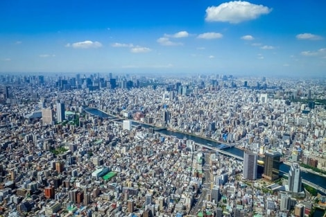

Which City
TOKYO:
I've chosen tokyo because i would like to visit the imperial palace one day.I also wanna visit the restuarants there because i hear that they are good.
A Foreign Language
I've chosen japanese because i love the way people pronounce the japanese words
| English | Japanese |
|---|---|
| Hey | Chotto |
| bye | Bai |
| Love | Ai |
| You | Kimi wa |
| Thank You | Arigatōgozaimashita |
Historic Places In Cape Town:

- Small but intense museum documenting the displacement and destruction policies not all that long ago.
- The materials used to build the Castle were local and included rock cut from the granite outcrop on Signal Hill
- It provides great intro in the dark past of the city.

- The first stone was laid on 2 January 1666 and it was completed by April 1679.
- Opened in1679, the Castle is the oldest surviving building in South Africa.
- The Castle of Good Hope was referred to as “Kui keip” by the Khoi and sometimes “Citadel” by Dutch settlers.

- The Iziko Museum was founded by Lord Charles Somerset in 1825 as a general museum comprising natural history.
- The Museum houses more than one and a half million specimens of scientific importance.
- For nearly 200 years scientists at the Museum have been adding to these collections and studying them.